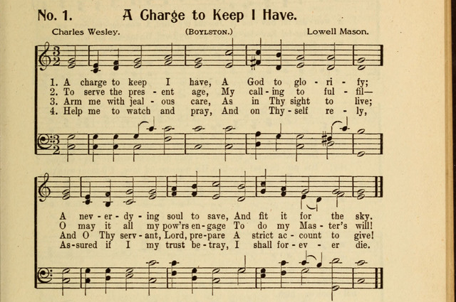
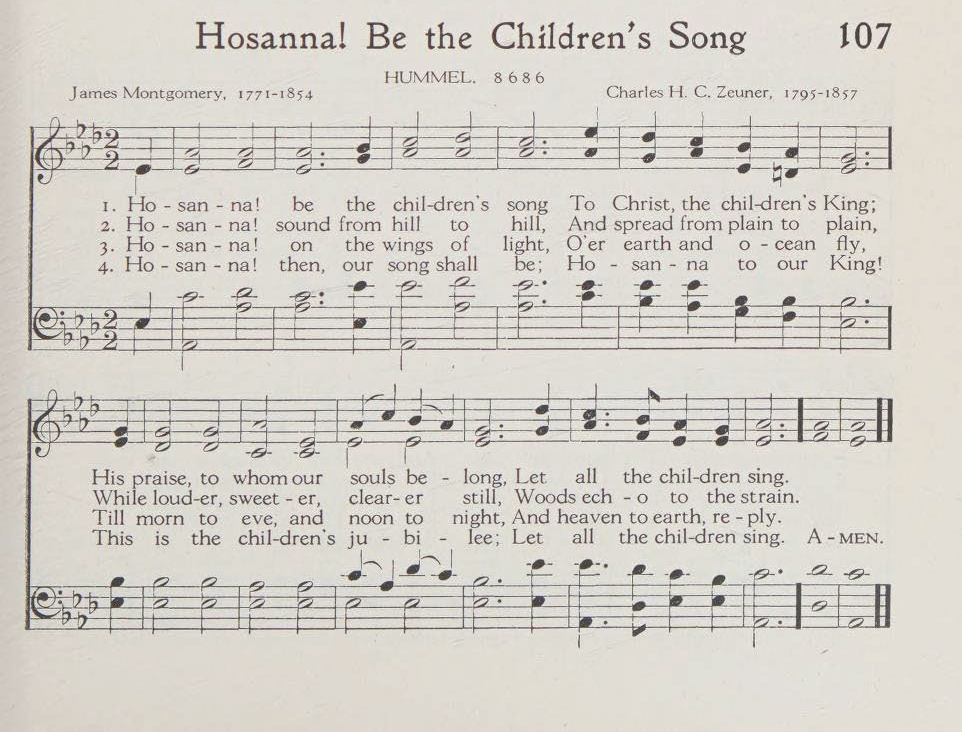
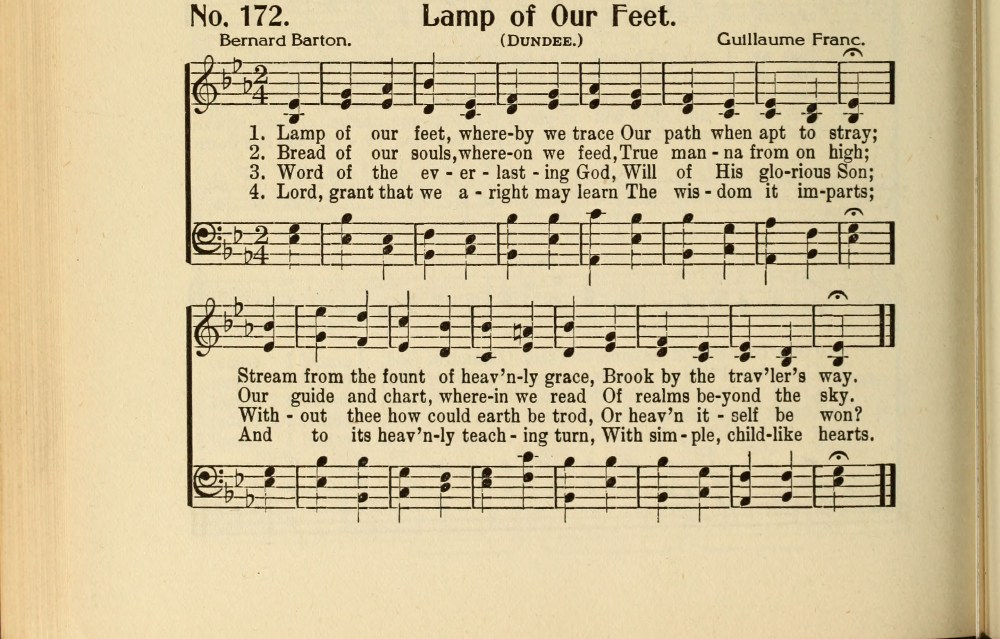
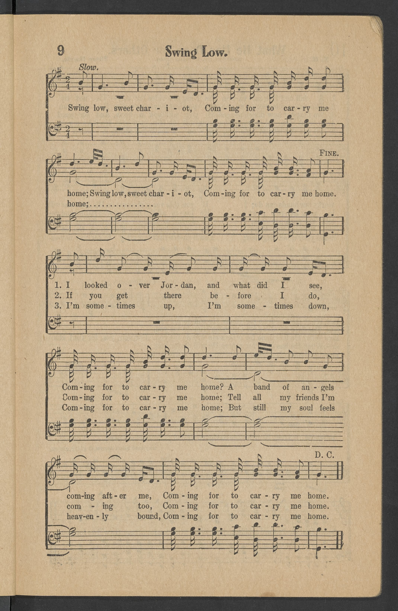

Four-shape scores
Treble · Alto · Tenor · Bass. Original soprano and tenor exchanged. Each song’s key and octaves are chosen by the same rules: keep the tenor on the staff from E to F, with a low alto.
These are uncorrected OMR drafts. Notes and voice separation need review; scan lyrics are not transcribed.
A Charge to Keep I Have (Boylston)
D major · Tenor F♯4–D5 · Alto C♯4–A4 · Major/minor reading needs review
Compare with original scan

A Charge to Keep I Have (Laban)
C major · Tenor E4–E5 · Alto C4–G4
Compare with original scan

Do Not I Love Thee, O My Lord?
F♯ minor · Tenor E♯4–F♯5 · Alto C♯4–B4
Compare with original scan

Hosanna! Be the Children's Song
A major · Tenor E4–E5 · Alto C♯4–A4
Compare with original scan

C major · Tenor G4–E5 · Alto E4–G4
Compare with original scan

F major · Tenor E4–F5 · Alto C4–A4
Compare with original scan

Praise God, From Whom All Blessings Flow
A major · Tenor E4–E5 · Alto C♯4–A4
Compare with original scan

Praise the Lord, Ye Heavens, Adore Him
B♭ major · Tenor E4–F5 · Alto C♯4–E♭5
Compare with original scan

We Give Thee But Thine Own
A major · Tenor E4–E5 · Alto C♯4–F♯4
Compare with original scan

A major · Tenor E4–F♯5 · Alto E4–A4
Compare with original scan

A major · Tenor E4–F♯5 · Alto E4–A4
Compare with original scan

Know, My Soul, Thy Full Salvation
Lyrics only — no score on this page